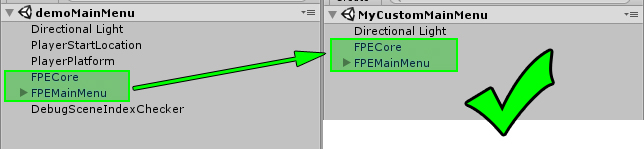

The provided demo scenes show how your game must also be structured. To make your very first build, open the Build menu and ensure you have the default scenes (as shown below), then press Build.
When the build finishes, you will have a compiled and working executable that matches the First Person Exploration Kit Demo.
To customize the build to have your own scenes, simply create the scenes according to the first Getting Started section, and add them to the scene list in Build Settings. Ensure that your "Main Menu" scene is at build scene index 0 as shown below:
Note:Your build must include a "Main Menu" scene at index 0.Your "Main Menu" scene must include a Main Menu prefab (such as the included FPEMainMenu.prefab) and an FPECore. If you do not include a "Main Menu" scene at index 0, your player will not be able to move around in the 0th scene in your build. Below is an example Scene Hierarchy for a custom "Main Menu" scene:
You're now ready to make your custom build!